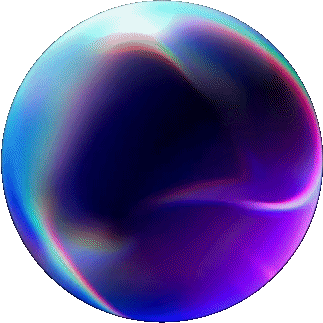

One more try.
Fast practice, camera controls and hook aim lines. Set up your next move.
A DDNet client that feels like you.
Prediction, HUD and identity. All yours to tune.
From the first hook to the final save, make every run feel like your own.
Move the controls. Watch it happen.
A taste of what you can tune in the client.
Illustrative browser experiences. Configure your actual game in NovaClient.
An illustrative position-correction model, not a benchmark. In the client, this requires player prediction.
Drag the panels, or focus one and use the arrow keys. Example layout inspired by the HUD editor.
Name and color preview. Badge customization and Premium cosmetics depend on your license role.
Tools already built into NovaClient.
From your warm-up to your next attempt.
Fast practice, camera controls and hook aim lines. Set up your next move.
Modern chat with configurable colors, translation and Twitch messages in your game.
Example time
Map attempts, session history, KoG statistics and achievements.
The rest is
in your hands, too.
The animation that follows you into Discord. Choose when to share your activity.
Manage Rich Presence in your NovaClient privacy settings.

NovaClient for Windows x64.
Download the complete ZIP. Extract it before opening DDNet.exe.
A NovaClient license is required.
Updating keeps your existing activation.
A DDNet client built on DDNet and TClient, with prediction settings, gameplay tools, an editable HUD and personalization. Keep playing on DDNet-compatible servers.
Download the complete Windows x64 package from the releases page. Extract all files into a folder, then run DDNet.exe. Keep the DLLs and data folder alongside the executable.
Yes. The client requires a valid license. Available Premium cosmetics and badge options depend on the role associated with your license.
No. These controls work only in your browser. Configure NovaClient to use its features in the game. The 3D scenes and data on this page are illustrative demonstrations.